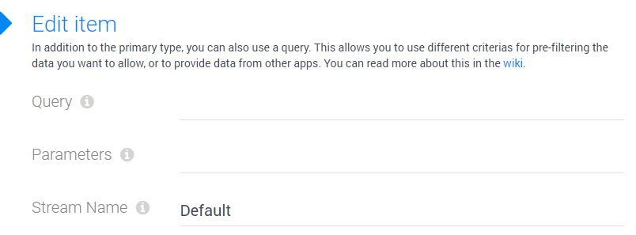

Field Input-Type entity-query
Use this field type for configuring an entity-picker storing relationships. It's an extension of the entity field type.
The special thing about this is that the items shown for selecting are retrieved from Query and not based on a content-type name. This allows you to look up any kind of data and offer it for selection.
Features
- provide values to select from a query
- optionally specify other streams than Default
- optionally provide query parameters
- optionally use tokens in query-parameters, to pass on values from other fields in the form
- todo/maybe data is lazy loaded, so the query is only hit when the dropdown is opened
Configuring an Entity-Query
This shows the configuration dialog:
- Query the name of the query to use
- Advanced
- Parameters a string like country=Switzerland or country=[Country] to parameterize the query
- Stream Name the stream name, in case you don't want the Default stream
In addition to these settings, you also have the basic entity settings which enhance the features you are using here.
Cascading Dropdowns
Dropdown-Fields can be cascaded - so that a selection on one dropdown changes the list of possible items on another dropdown. You'll have to work with the Parameters to get this to fly. S
Important Notes
Note that this stores item-relationships so you can only use it to select items which exist in the 2sxc/EAV database. You cannot use it to select items provided from non-entity sources, like Sql-data or File-lists. To select such data, you'll need the String-Dropdown-Query instead.
History
- Introduced in EAV 4.x 2sxc 9.11